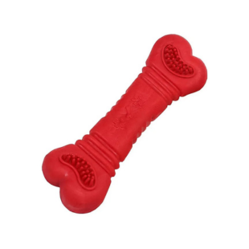

Brinquedo Osso de Borracha

Preço: R$ 12,90
Especificações do Produto:
- Marca: Furacão Pet
- Medidas: 2.1cm × 2.3cm × 2.4cm
- Benefícios: Brinquedos de borracha são ideais para estimular as habilidades mentais e físicas mantendo seu cachorro alegre e entretido. Seu formato com superfície irregular atrai o cachorro e o instiga a brincar. Aumenta o laço de amizade com o dono e com as pessoas com quem o pet convive, e a brincadeira é a melhor maneira para isso acontecer